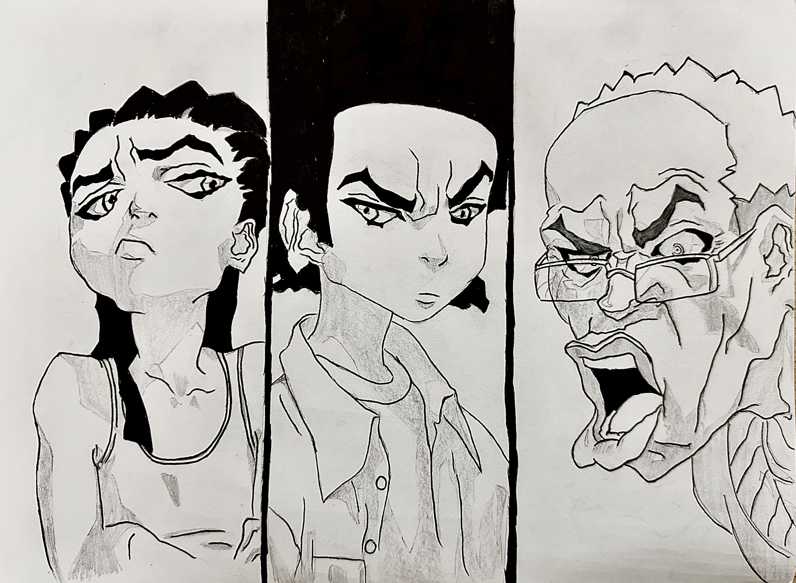
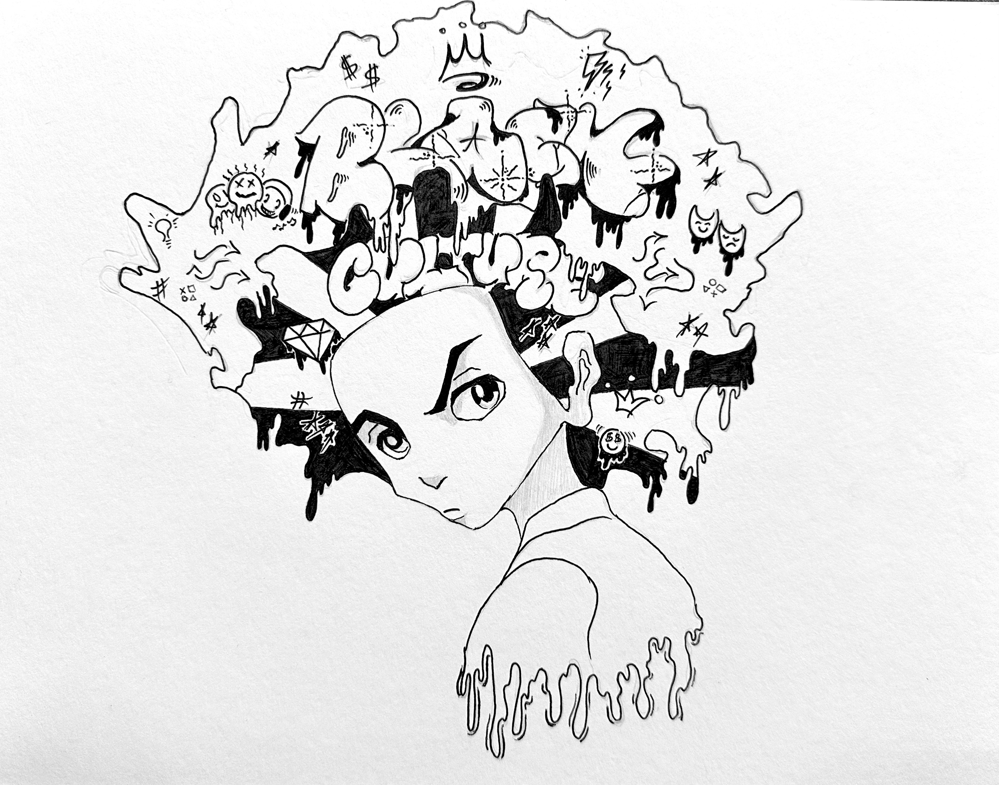
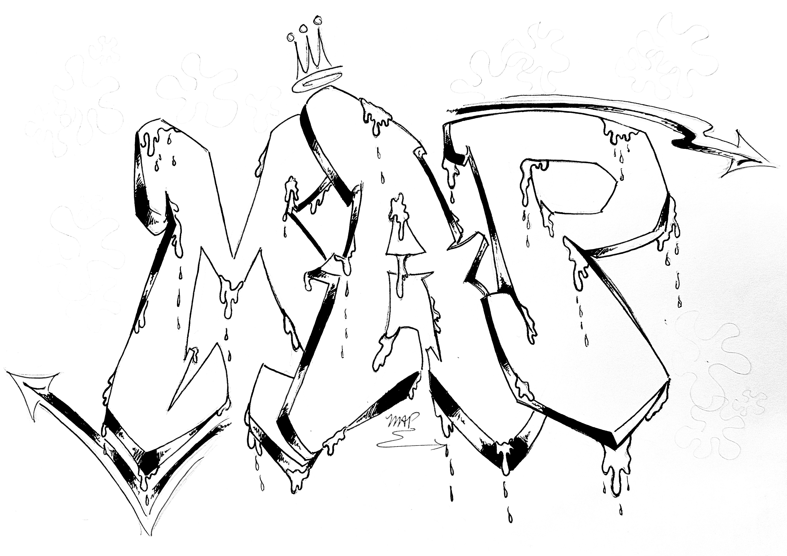

- Sports
- I've been playing sports ever since I could remember. I've been playing basketball basically my whole life, then in fifth grade my dad wanted me to try a new sport called lacrosse, and I've been playing both ever since. I would say basketball is my favorite sport but I also like playing other sports too. Like either during PE or lunch break I would play basketball, football, soccer, baseball you name it. My favorites to watch are basketball and football. Sports is my life and it has helped me grow so much as a person and helped me get away from any obstacles or hard times in my life.

- Music
- Music is a really big part of my life. Some if not most of the stuff I listen to is rap/Hip-Hop, R&B, latin, afro beats and much more. Three of the artists that I listen to are shown in the image below. The amount of time just listening to my playlist and how it has helped me cope with the stress, anxiety of whatever is going on in my life at that time. How some of the artist have changed/influenced my view on the world and how their music has uplifted me and so many others like me to strive for something greater, to fight for what's right, and to keep and hold dear what means most to you.

- Video Games
- Video games for me are a great pastime and escape from all of the stress in my life. I've had many game systems in my life, from the Wii, to a Nintendo 3DS, to an XBOX 360 to a PS4, to my lated system the Nintendo switch. Some of the games I've played are Wii sports, NBA 2K, Madden, Watch Dogs, Super Smash Bros, MarioKart, Spider Man PS4 and much more.

- Drawing
- I've been drawing for really most of my life. It was something that always helped me escape the more difficult and stress academic side of school. It was also something that I just really liked to do which is very rare in an academic setting.



Go back to the main page